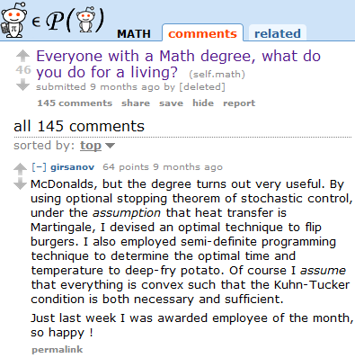
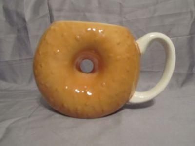
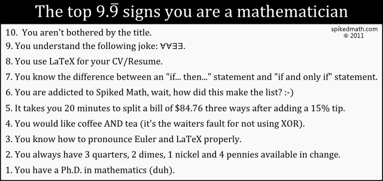

Math is beautiful
See also:
- Different sizes of infinity
- Beauty in Maths: math animation no.7 - 5D Visualization of three equations
Math is important
If you are interested in natural science, you will definitely need math. Here are a few examples where math is directly needed:
- Computer Science: All kinds of animations, stochastics is needed often, cryptography needs number theory
- Physics: a lot of analysis seems to be needed, differential equations are used if processes are depend on time
- Chemistry, Biology, Medicine, Psychology: again stochastics for interpreting results of experiments
- economic science: modelling - I don't know anything about economic science, but I've heard they need differential equations
Although I guess you could continue this list, but the most important reason is that it teaches you how to think logically.
Jobs are better
{kind=link}

Math is worth a lot of money
Math is fun
{kind=link}

{kind=link}

Money
Not knowing mathematics can cost you money. An obvious example is: